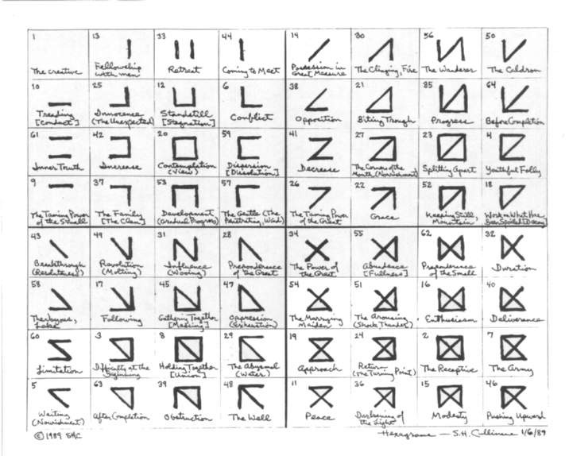
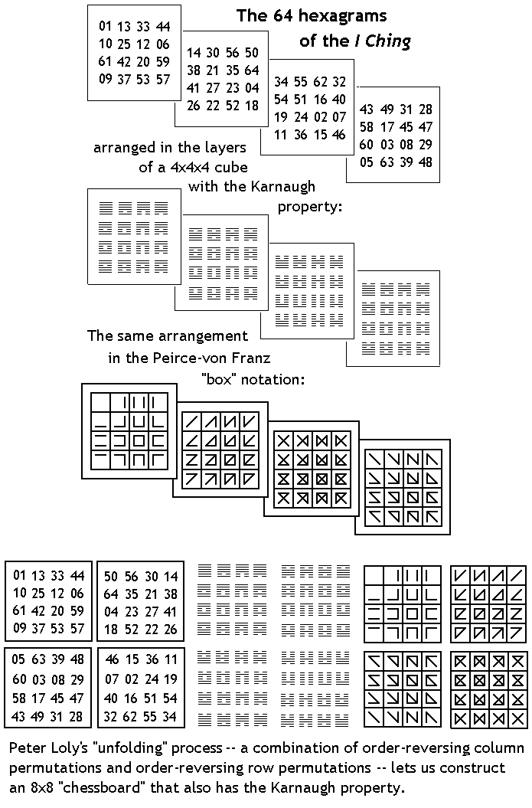

| This
site gives a new arrangement of the 64 hexagrams of the I Ching. The
new arrangement lets us describe the natural group of transformations
of these hexagrams in a simple way. This arrangement was discovered
during an investigation of the six-dimensional affine space over the
two-element field by S. H. Cullinane on January 6, 1989. |
| Introduction
- Hesse on the I Ching and on the chessboard: |
"Once
Knecht confessed to his teacher that he wished to learn enough to be
able to incorporate the system of the I Ching into the Glass Bead
Game."
- Magister Ludi (The Glass Bead Game), by Hermann Hesse (1943), tr. by
Richard and Clara Winston, Bantam paperback, 1970, p. 117
"Here and there in the
ancient literatures we encounter legends of wise and mysterious games
that were conceived and played by scholars, monks, or the courtiers of
cultured princes. These might take the form of chess games in which the
pieces and squares had secret meanings in addition to their usual
functions."
- The Glass Bead Game, pp. 8-9
|
| The
Cullinane sequence of the 64 hexagrams: |
01 13 33
44 14 30 56 50
10 25 12 06 38 21 35 64
61 42 20 59 41 27 23 04
09 37 53 57 26 22 52 18
43 49 31 28 34 55 62 32
58 17 45 47 54 51 16 40
60 03 08 29 19 24 02 07
05 63 39 48 11 36 15 46 |
| The
above system of coordinates gives a 3-dimensional Karnaugh map if
we interpret the four 4x4 quadrants of the 8x8 array, counted clockwise
from the upper left, as the four layers, counted top to bottom, of a
4x4x4 cube. Then (with identification of opposite sides of the overall
cube) each subcube is bordered by six other subcubes, each of which
differs from the given subcube in exactly one coordinate. |
| The I
Ching as affine coordinates in a 4x4x4 cube: |
| The
above labeling of the 64 subcubes of a 4x4x4 cube enables us to
describe the natural transformations of the I Ching hexagrams in a
geometrically simple way. See the following research note on affine
groups and references on affine geometry. |
| The
von Franz style of drawing hexagrams: |
An
alternative way of drawing the I Ching hexagrams is suggested by
Marie-Louise von Franz. Draw a figure of six lines made up of the four
sides and the two diagonals of a square.
"They are the same six lines that exist in the I Ching.... Now observe
the square more closely: four of the lines are of equal length, the
other two are longer.... For this reason symmetry cannot be statically
produced and a dance results."
- Marie-Louise von Franz, Number and Time (1970), Northwestern U. Press
paperback, 1979, p. 108
One may identify the
above six lines with the yin (broken) lines of I Ching hexagrams as
follows:
Top line of square........Hexagram 09, yin line in 4th place
Right line of square......Hexagram 13, yin in 2nd place
Bottom line of square...Hexagram 10, yin in 3rd place
Left line of square.........Hexagram 44, yin in 1st place
Upper-left to lower-right diagonal...Hexagram 43, yin in 6th place
Upper-right to lower-left diagonal...Hexagram 14, yin in 5th place.
Some may find this
square-based layout gives each hexagram (except number 1, which is
invisible) a more distinctive appearance that that given by the usual
solid- and broken-line method. |
| References
on the I Ching: |
| Related
sites by S. H. Cullinane: |
Note of January 6, 1989 showing
the 64 hexagrams in the von Franz style,
in the arrangement discovered by S. H. Cullinane:

|
Update of June 30, 2006:
The sixteen figures in the lower right quadrant of the von-Franz-style
8x8 array above also appear in a discussion of the work of Charles
Sanders Peirce, a logician of the late nineteenth and early twentieth
century. See "New Light on Peirce's Iconic Notation for the
Sixteen Binary Connectives," by Glenn Clark, in Studies in the
Logic of Charles Sanders Peirce, Indiana University Press, 1997.
Peter Loly of the University of Manitoba has also investigated cubic
and square arrangements of the 64 hexagrams that have the Karnaugh
property (adjacent figures differing in only one place). See his
paper "A Logical Way of Ordering the Hexagrams of the Yijing and the
Trigrams of the Bagua" (pdf),
published in The Oracle-- The Journal of Yijing Studies, vol.
2, no. 12, January 2002, pp. 2-13.
The new illustration below may serve to clarify some of my earlier
remarks above and to show how Loly's "unfolding" process may be
applied to my 1989 arrangement to yield a flat "chessboard" of
hexagrams
that, like the cube, has the Karnaugh property.

|
Page
last updated June 30, 2006; created August 8, 2000.
|
|